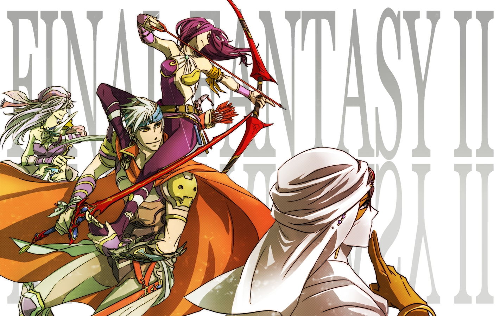
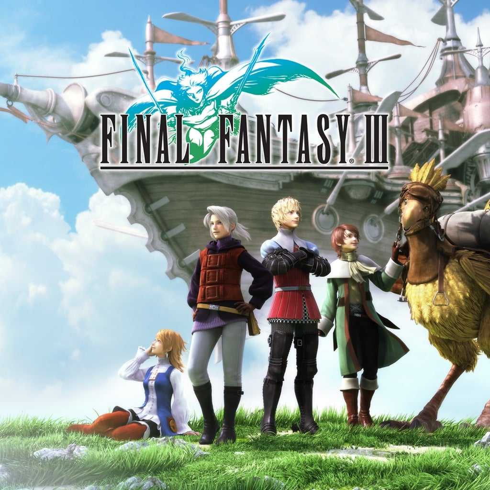
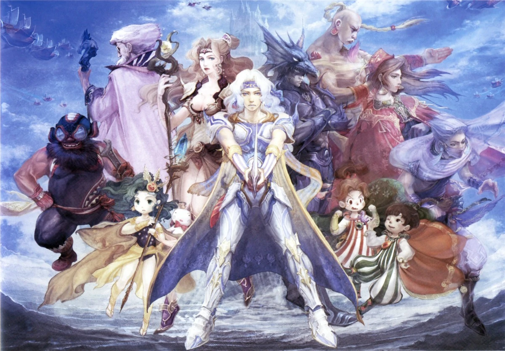
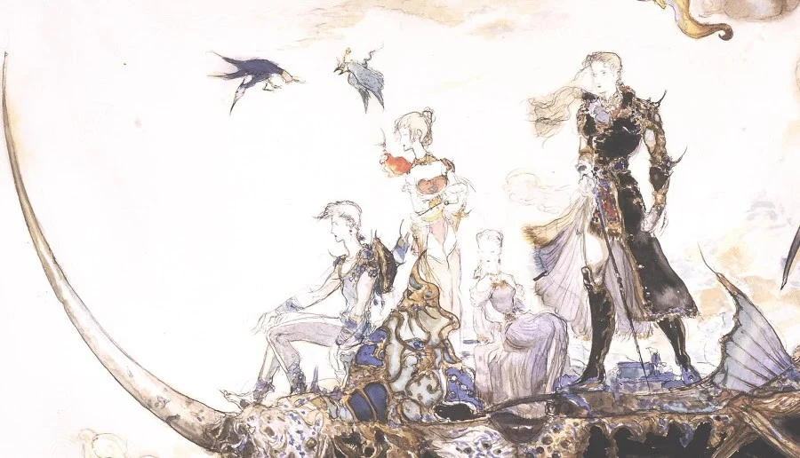
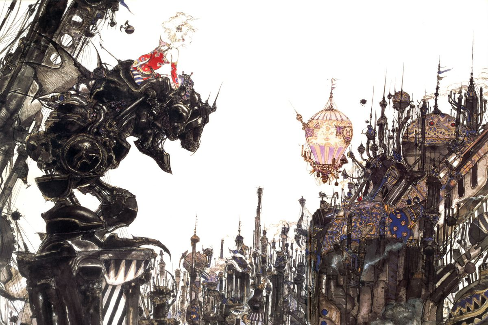
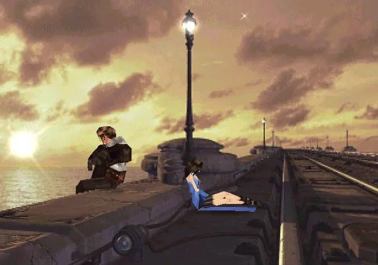

FINAL FANTASY I COVER ART PICTURED ABOVE. RETRIEVED FROM https://store.steampowered.com/app/1173770/FINAL_FANTASY/
FINAL FANTASY II COVER ART PICTURED ABOVE. RETRIEVED FROM https://www.sakugacity.com/ams/final-fantasy-ii.67/
FINAL FANTASY III COVER ART PICTURED ABOVE. RETRIEVED FROM https://www.ign.com/wikis/final-fantasy-iii/Basics
FINAL FANTASY IV GAME ART PICTURED ABOVE. RETRIEVED FROM https://finalfantasy.fandom.com/wiki/Final_Fantasy_IV_story
FINAL FANTASY V GAME ART PICTURED ABOVE. RETRIEVED FROM https://www.kotaku.com.au/2019/06/final-fantasy-v-reminds-me-of-what-i-loved-about-the-series/
FINAL FANTASY VI GAME ART PICTURED ABOVE. RETRIEVED FROM https://www.theverge.com/2017/6/26/15874710/nintendo-snes-classic-final-fantasy-vi-rpg-classic

FINAL FANTASY VII GAME SCENE PICTURED ABOVE. RETRIEVED FROM https://www.redbull.com/int-en/final-fantasy-7-remake-tips-combat-guide4
FINAL FANTASY VIII GAME SCENE PICTURED ABOVE. RETRIEVED FROM https://kefkahatesyou.wordpress.com/2018/01/22/if-you-come-here-youll-find-me-i-promise/comment-page-1/